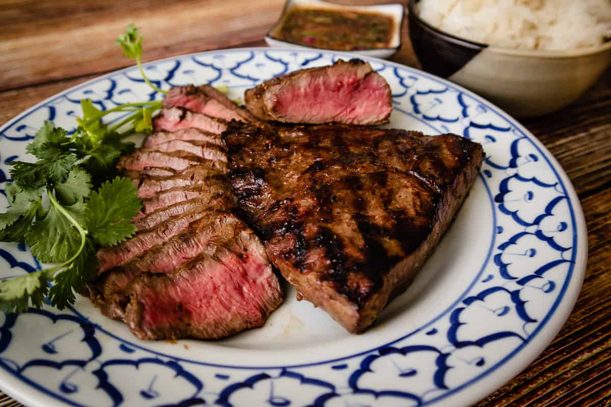

Thai Marinated Steak
Home

Description
Thai Marinated Steak is a flavorful dish featuring tender beef soaked in a blend of soy sauce, fish sauce, garlic, lime juice, and herbs. The marinade infuses the meat with a balance of salty, tangy, and slightly sweet flavors. It’s often grilled or pan-seared and served with a spicy dipping sauce or sticky rice.
Ingredients
- Black or white peppercorns
- Garlic
- Soy sauce
- Oyster sauce
- Sugar
- Lime juice
- Neutral oil
Steps
- Pound garlic and peppercorns together into a fine paste. Alternatively, grind the peppercorns with a grinder and mince or grate the garlic.
- Add all the liquid marinade ingredients and stir to mix well.
- Marinate your steaks of choice for at least 3 hours and up to 1 day.
- Bring the steaks to room temperature 1 hour before grilling and cook to your desired doneness.